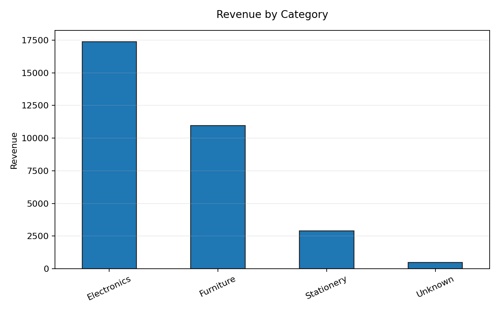
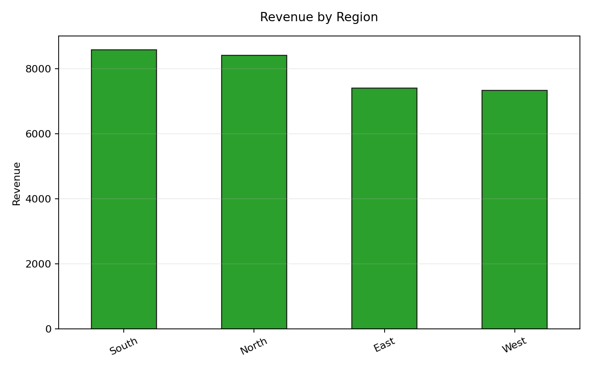
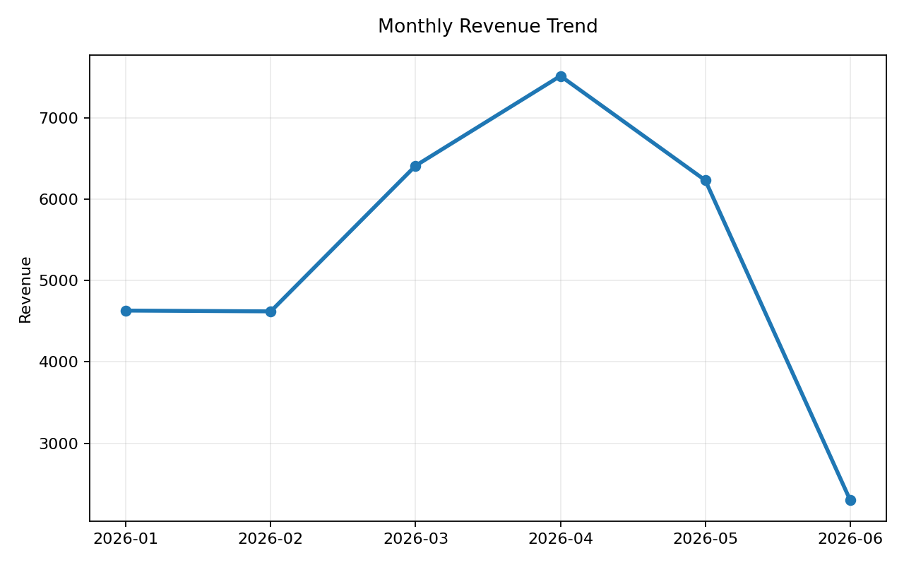
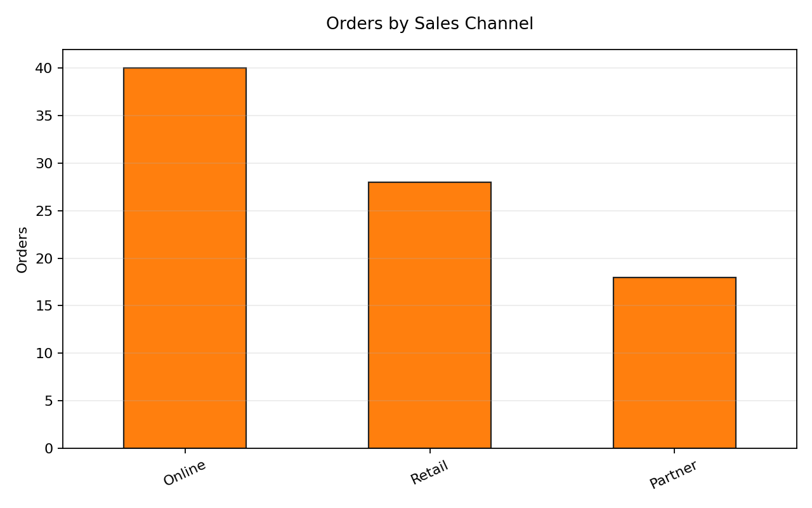
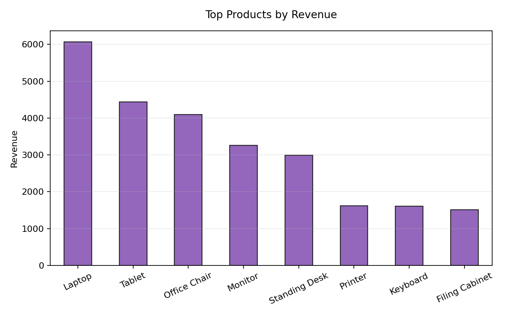
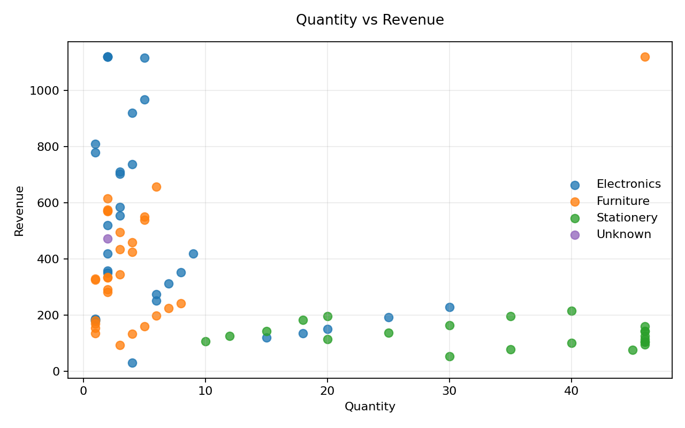

Total Revenue$31,703.87
Clean Orders86
Average Order Value$368.65
Top RegionSouth
Cleaning Summary
The raw file includes duplicates, blank fields, invalid dates, invalid numeric values, and extreme values. The pipeline standardizes text, removes exact duplicates, imputes recoverable fields, recalculates revenue, and caps outliers with the IQR method.
| metric | value |
|---|---|
| raw_rows | 88.00 |
| duplicate_rows_removed | 1.00 |
| missing_or_blank_values_before_cleaning | 3.00 |
| invalid_dates_removed | 1.00 |
| invalid_numeric_values_imputed | 2.00 |
| quantity_outliers_capped | 9.00 |
| quantity_iqr_lower_cap | 0.00 |
| quantity_iqr_upper_cap | 45.75 |
| revenue_outliers_capped | 5.00 |
| revenue_iqr_lower_cap | 0.00 |
| revenue_iqr_upper_cap | 1120.34 |
| clean_rows | 86.00 |
Key Findings
- Electronics generated the highest revenue by category.
- South led regional revenue after cleaning.
- 2026-04 was the strongest month in the dataset.
- Online orders dominate volume, while higher-ticket products drive most revenue.
Visual Dashboard






Top Products
| product | revenue |
|---|---|
| Laptop | 6070.36 |
| Tablet | 4443.54 |
| Office Chair | 4097.82 |
| Monitor | 3263.58 |
| Standing Desk | 2991.20 |
| Printer | 1623.76 |
| Keyboard | 1609.48 |
| Filing Cabinet | 1515.58 |